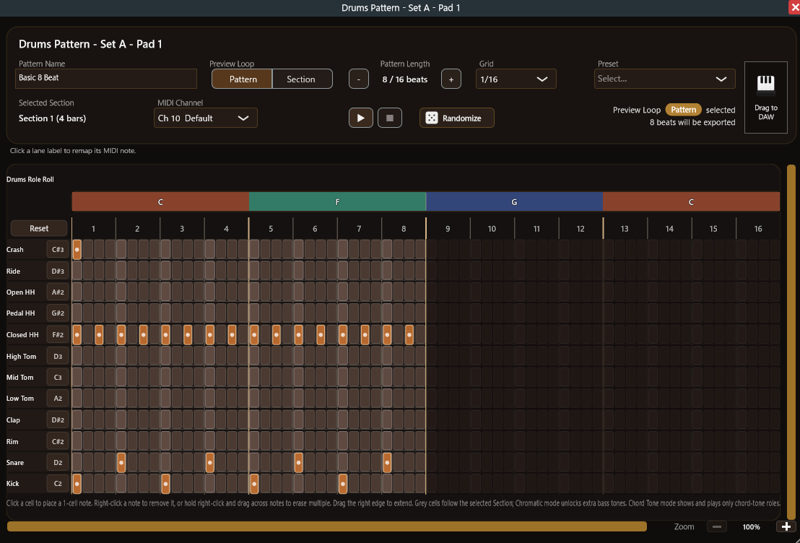
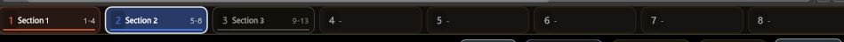
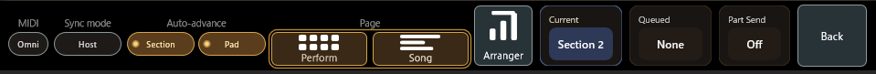

ライブで伴奏を回したい
セクションランチャーと予約ベースの切り替えで、小節に合わせて安全に次の展開へ移れます。
Chord Dock Performance は、タイムラインで作ったコード進行の上に Drums / Bass / Arp / Chord Pad の4パート伴奏を組み、パッドで演奏できるようにするエディションです。作った進行が、そのままライブや構成スケッチの伴奏になります。
すべてのエディションは共通インストーラーです。購入後に発行されるライセンスキーを入力して機能を有効化します。ライセンスは 1 アカウント 2 台まで使えます。
購入前に、Lite / Extended のアレンジャーモードデモ（実再生90秒・各パート Pad 1–3）で操作感を試せます。
※ アレンジャーモードを含む Chord Dock 2.0 の概要紹介動画です。
Drums / Bass / Arp / Chord Pad のパターンをセクション単位で作成し、パッドに割り当てます（各パート8パッド×2セット）。役割ベースのパターンはコード進行の変更に自動で追従。パートごとのスタイルプリセットとランダム生成で、土台を素早く作れます。


Drums はレーン式のステップエディタ（GM準拠・変更可）、Bass は「コードロールシーケンサー」と「MIDIロール」の2方式、Arp / Chord Pad はロールレーン式で編集できます。仕上げたパターンは、どれも MIDI としてドラッグ書き出しできます。
クリック、数字キー 1–8、MIDI ノートでセクションを予約。セクションは Launch Quantize（Next Bar / Section End）で、パッドは切り替えタイミング（Next Bar / Pattern End）と再生位置（Bar Lock / Restart）で制御します。Auto（自動進行）と Standby Pad 1、そして Sync Mode（Host / Plugin）により、DAW 追従でもプラグイン主導でも演奏できます。


4パート×8パッド＝32パッドを1画面に表示する演奏用ページです。セクションを予約しながらパッドの組み合わせで展開を作り、ライブでも構成の実験でも、演奏そのものに集中できます。


パッドパターンを曲順に配置して、曲全体を通しで確認できます。DAW 停止中の内部再生にも、ホスト再生への追従にも対応。クリップ編集は Undo 対応です。

同梱の小型プラグイン ChordPart（VST3）を受け側トラックに挿すだけで、アレンジャー各パートの MIDI を配線不要の自動接続で受け取れます。ホスト側の MIDI ルーティング仕様に関わらず、パートごとに音源を割り当て可能。追加レイテンシは最大1オーディオバッファで一定（推奨バッファサイズ 128–256 サンプル）です。

セクションランチャーと予約ベースの切り替えで、小節に合わせて安全に次の展開へ移れます。
DAW が短いループを回していても、Plugin 同期ならパッド操作で曲を先へ進められます。構成の実験に最適です。
ChordPart で各パートを別トラックへ。DAW 内蔵音源を含む好きな音源で、パートごとに鳴らせます。
4パートの伴奏パターンを、全8パッド×2セットで演奏できます。
32パッドの演奏画面と、曲順にパターンを並べる俯瞰画面。
同梱プラグインで、各パートの MIDI を DAW の別トラックへ。
アレンジャーパターンを MIDI としてドラッグ書き出しできます。
すべてのエディションは共通インストーラーです。本体と一緒に ChordPart もインストールし、いつもの環境で立ち上がることを確認します。
購入後に発行されるライセンスキーを受け取ります。ライセンスは 1 アカウントあたり 2 台まで利用できます。
プラグイン右上の設定メニューからライセンスを入力し、ブラウザでデバイス承認を行うと Performance 機能が解放されます。
ChordPart は独自のライセンス操作を持たず、本体プラグインのエディションに従います。本体と同じバージョンのセットでご利用ください。画面付きの説明は トップページのアクティベーション案内 と FAQ から確認できます。